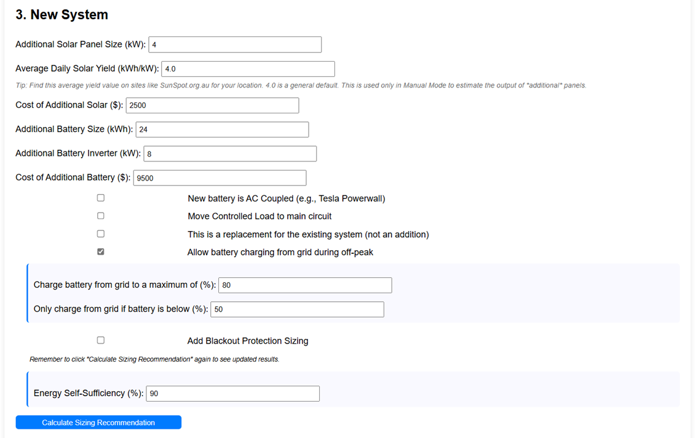
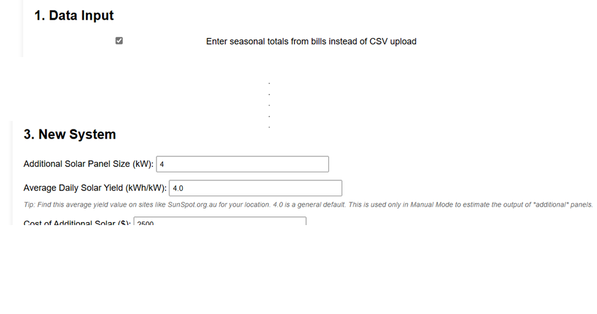
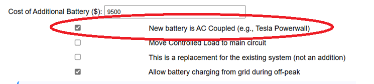
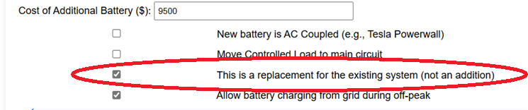
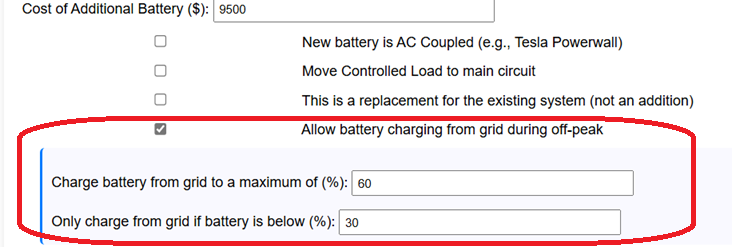
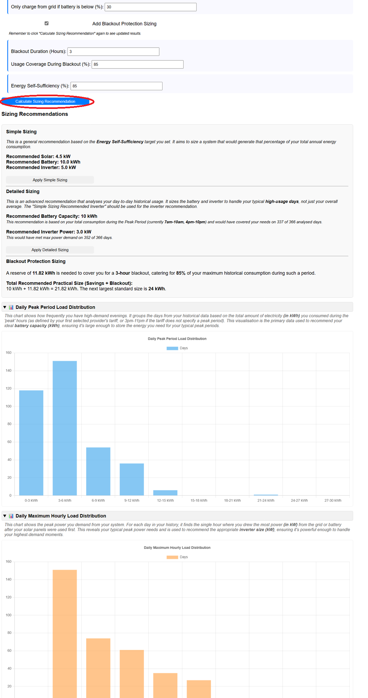

This section is where you define the solar panels, battery, and inverter system you are considering installing or upgrading to. Enter the specifications based on the quotes you have received.

Enter the total kilowatt (kWp) capacity of any new solar panels being added. Do not include the size of your existing panels here (they are entered in Section 2).
This field appears only when "Manual Mode" is selected in Section 1 by checking the "Enter seasonal totals from bills instead of CSV upload." checkbox.
Enter the estimated average daily energy (kWh) that each kWp of new solar panels will generate at your location. You can find this value on sites like SunSpot.org.au. A value of 4.0 is a reasonable general default.
Note: The generation for your *existing* panels in manual mode is based on the "Total Solar Generation" you entered for each season.

Enter the total installed cost (including panels, racking, isolators, labour, etc.) for the new solar panels only.
Enter the total usable energy capacity (kWh) of the new battery being installed.
Enter the maximum continuous power output (kW) of the new battery inverter. If you are installing a new hybrid inverter that manages both solar and battery, enter its total rating here.
Enter the total installed cost for the new battery and its associated inverter (if separate) or the hybrid inverter.
Check this box if your new battery includes its own inverter and connects to your home's AC wiring independently from your solar inverter (e.g., Tesla Powerwall added to an existing solar system). Leave unchecked if installing a new hybrid inverter or a DC-coupled battery connected directly to a hybrid inverter.
How this affects calculations:

Check this box if you plan to move your controlled load circuit (e.g., electric hot water) to your main switchboard so it can be powered by your solar and battery. Leave unchecked to keep it on its separate, cheaper tariff (if applicable).
Check this box only if the new system completely replaces your old one (e.g., removing old panels and installing all new components).
How this affects calculations:

Check this to allow the battery to charge from the grid during specific times (configured per provider in Section 5). This can be beneficial on low-solar days or for tariffs with very cheap off-peak rates.
Sub-Settings:

Check this to include an additional battery capacity recommendation designed to cover essential loads during a power outage.
Sub-Settings:
This target percentage is used only for the "Simple Sizing" recommendation. It aims to size the solar array large enough to generate this percentage of your total annual energy consumption.
Click this button after entering your usage data (Section 1) and existing system details (Section 2). It provides both a "Simple" heuristic recommendation and (if using CSV data) a "Detailed" recommendation based on your historical usage patterns.
